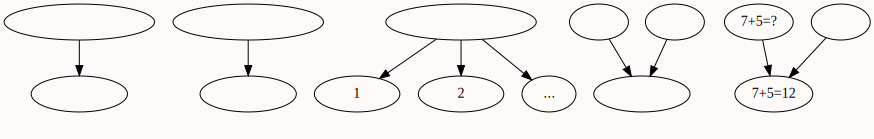
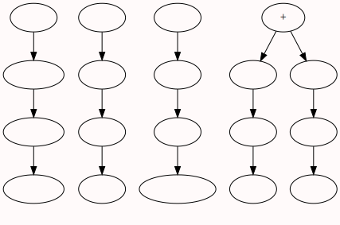

Immanuel Kant 伊曼努尔·康德
1724.4.22 - 1804.2.12_11
哲学门外汉的一点思考
- 看到事物的界限;至少任何现实社会中的事物都是有限事物
- 我们的逻辑起点建立在历史经验过程的不变性上
- 科学:可以对逻辑推论进行验证(可复制)
- 所有逻辑推导出的结论都需要受到自由批判,批判的不只是逻辑,更重要的是其"科学基础(经验,事实)"
- 纯粹理性批判就是在寻找形而上学的经验基础
- 什么样的知识是先天知识?
- 人生智慧-翻译-->哲学
- 康德的哲学 的抽象基础是数学(欧式几何)和物理学(牛顿力学);并试图通过数学,物理学的基本元素来使哲学成为一门科学
- 现在看来哲学没有跟上自然科学的发展.
简介
- 德国古典哲学的创始人，是唯心主义、不可知论者，德国古典美学的奠定者
- 虽然整个社会的大环境是动乱的，但他个人的生活环境却是平稳而有规律的、学院式的。
- 纯粹理性批判 研究的是人类如何认识外部世界的问题
- 实践理性批判 要回答的问题是伦理学的问题：我们应该怎样做？
- 判断力批判 要回答的问题是：我们可以抱有什么希望？
- 虽然康德大部分著作都很艰涩，读他的书需要勇气，但要研究哲学，康德却是无法回避的一座高峰。他对德意志心灵的影响非常巨大
- 康德的批判哲学体系是近代理性主义和经验主义矛盾的结合,具有鲜明的二元论特征
- 他总是五点起床，然后立即投入工作。
- 从七点至九点，他在大学里讲课。
- 九点至下午一点，这是他用于个人研究的主要工作时间段，他的科学著作大都是在这段时间里完成的。
- 接着是午餐时问，进餐时康德几乎总是有客人陪伴，他更喜欢接待的客人都是普通市民而非学者。午餐是用来完全放松自己的，往往要持续好几个小时，席间会谈论各种各样的话题。
- 接着是散步，同样是按照精确的时间，而且也非常具有规律性。
- 散步之后，他又开始工作，晚上十点准时上床睡觉。
纯粹理性批判
1781
- 认识论,方法论,逻辑学,形而上学
- (理性,经验)这些无休止的争吵的战场叫做形而上学
- 每一种据认为先天地确定的知识本身都预示着它要被看作绝对必然的.
- 纯粹理性批判不是对某些书或体系的批判,而是对一般理性能力的批判
- 我们的时代是真正的批判时代,一切都必须经受批判.宗教希望通过其神圣性,立法凭借其权威,想要逃脱批判.理性只会把敬重给予那些经受得住它自由而公开的检验的事物.
- 知性和理性脱离一切经验能够认识什么?认识多少?
- 为了通俗化的目的而使用实例和说明
- 这本书绝不会适合于大众的使用,
- 明晰性的辅助手段(例子)虽然在部分中有效,但在整体中往往分散了.
- 看看你的住所周围你将知道你的财产是多么的简单.
- 当人们让各门科学互相跨越其界限时,这些科学并没有获得增进,而是面目全非了.
- 数学和物理学是理性应当先天的规定其对象的两门理论
- 在经验性的原则上建立起来的自然科学
- 理性必须一首执着自己的原则,另一手执着它按照这些原则设想出来的实验.这样自然科学从来回摸索走上了科学的可靠道路
- 形而上学这种完全孤立的,思辨的理性知识.是根本凌驾于经验教导之上的(即单纯凭借概念的)命运还至今没有开恩使它走上一条科学的可靠的道路.尽管它比一切科学更古老.在这里人们不得不无数次的走回头路.
- 永远不要凭借思辨理性去超越经验的界限
- 纯粹理性有一个完全必要的实践运用(道德运用)
- 理性的一切思辨的知识只要有可能 都是限制在仅仅经验的基础之上.
- 年轻人对他们一点也不理解的事物随意玄想,甚至企图捏造其他的观念和意见,乃至忽视了去学会基本的科学知识.
- 辩证论对纯粹理性是自然的.
- 天赋的素质:永远也不能通过尘世的东西来满足的素质,已经必然导致了对来世生活的希望.
- 他们只是把真理的用法传达给大众,而把他们的钥匙由自己保管
- 唯一能使理性的工作立足于坚实的基础上的批判的自由
- 摆脱科学的约束,把工作变成儿戏,把确定性变成意见,把哲学变成偏见
- 任何一种哲学阐述都可能在个别地方被人揪住,(因为他不能像数学那样严密)......但从整体上把握这些思想的人,这些矛盾是很容易解决的.
导言
- 纯粹知识和经验性知识的区别?
- 我们的一切知识都是从经验开始,这是没有任何怀疑的.
- 先验的知识:完全不依赖于任何经验而产生的知识,(包括间接依赖)
- 在先验知识中完全没有掺杂任何经验性的东西的知识是纯粹的
- 我们具有某些先天知识?
- 经验性的普遍性只是把对大多数场合适用的有效性任意提升到对一切场合都适用的有效性.
- 必然性和严格普遍性是一种先天知识的可靠标志
- 哲学需要一门科学来规定一切先天知识的可能性,原则和范围
- 纯粹理性本身的不可回避的课题就是:上帝,自由和不朽
- 自然的理解:以正当合理的方式发生的事
- 如果我们超出经验的范围,我们肯定不会遭到经验的反驳
- 数学给了我们一个光辉的范例,表明我们离了经验可以在先天知识(本文将先天理解为先验)中走多远.
- 分析判断和综合判断的区别?
- 肯定性的分析判断是谓词和主词的连结是通过同一性来思考的判断.
- 综合的判断:是谓词和主词的连结是不借同一性来进行思考的判断
- 经验判断就其本身而言全都是综合的.
- 我们先天的思辨知识的全部目的都建立在这样一些综合性的亦即扩展性的原理之上.
- 在理性的一切理论科学中都包含有先天综合判断作为理论原则
- 纯粹理性的总课题
- 先天综合判断是如何可能的?
- 因果律:结果和原因相连接的综合命题
- 纯粹理性用在奠立和发展一切含有关于对象的先天理论知识的科学中的可能性
- 在一切人类中只要他们的理性扩展到思辨的地步则任何时代都现实的存在过,并将永远存在某种形而上学
- 理性的批判最终必然导致科学
- 澄清我们的理性,并使它避免犯错误,而这已经是极大的收获了
- 先验的:一般的有关对象的先天概念的知识
- 一种对纯粹理性能力本身的批判
- 以自己无根据的主张来评判别人无根据的主张
- 先天知识应当是完全纯粹的.(没有任何经验性的东西)
- 一切实践的东西,就其动机而言,都与属于经验性知识来源的情感相关
- 人类知识有两大主干:感性和知性; 感性获得对象,知性则让对象被思维
先验要素论
先验感性论
- 一切思维作为手段并以之为目的的还是直观 {直观就是视觉,听觉,嗅觉,味觉,触觉}
- 通过被对象所刺激的方式来获得表象的接受能力.就叫做感性
- 感觉,经验性的直观,现象,质料,现象的形式,
- 一切在其中找不到任何属于感觉的东西的表象,称之为纯粹的
- 广延和形状属于纯粹直观
- 一门有关感性的一切先天原则的科学,称之为:先验感性论
- 有两种感性直观的纯形式:空间和时间
- 空间是不是一个经验性概念?{ 空间是一个无限量,时间也是一个无限量}
- {坐标系的经验来源视什么? 直尺}
- {日常的研究对象都是有限的,所以无限的对象就具有了超越特殊走向一般的超越性,即"先验"}
- {分到不能再分,或者说可以无限分割的事物,就可以作为综合判断的"主体和谓词"了
- {边界是没有边界的,}
- 脱离感性的自在之物我们完全是不知道的. {不可知论?}
- 唯有通过概念或直观来达到这类绝对必然的普遍有效的真理
先验逻辑
- 知性:自己产生表象的能力,或者说认识的自发性
- 感官的影响,想象的游戏,记忆的规律,习惯的力量
- 什么是真理? 真理是知识和他的对象的一致
- 没有直观,我们的一切知识就缺乏客体
- 先验分析论:
- 每个人类知性的知识都是一种借助于概念的知识,它不是直觉性的而是推论性的
- 思维就是凭借概念的认识
成段摘录
纯粹思辨理性的这一任务就是进行那项实验,即按照自然科学家的范例着手一场形而上学的完全革命.来改变形而上学迄今的处理方式.这项批判是一本关于方法的书,而不是科学体系本身.
唯心论是这样一种理论,他把我们之外的空间中诸多对象的存有要么宣布为可疑的和不可证明的要么宣布为虚假的和不可能的.
问题
- 事物的本质是什么?
- 形状,大小,轻重,......我们用到的几乎都是事物的属性
- 软件也是一个体系?软件也是一个世界?软件的先验哲学是什么呢?
- 软件可以看做一种经验世界的映射,同样人的思维也可以看做是一种经验世界的映射
- 观点2:事实上,我在做数学题的时候,对几何体的构建,同样仿照生活中的立体形状
- 相对论和测不准原理等可以作为唯心世界观的论据吗?
- 不能,你会因为从不同的角度观察放大镜后面的物体,物体的大小发生改变而认为水中的物体不存在吗?
- 同理,相对论下时间空间,会在接近光速的时候发生改变,并不能否定客观实在性
- 通过多次经验抽象而具有的概念,就不已经验性的东西为前提了吗?
- 概念存在歧义


有时间再看;看这本书要慢慢的看,时间至少留出半个月
实践理性批判
1788
序言
判断力批判
1790
辩——多角度思考
浅见:
我觉得人的思想要想升华到一个新的境界,其实很困难;
就目前看,要达到全新的境界往往需要
{全新的环境+长期的观察思考+经验知识积累+理论层面体系化的总结归纳},
而现实中往往大多数的时候只是看的角度变了从而认识到某一事物的另一面;而已;
"子非鱼"问题(濠梁之辨)
原文:
庄子与惠子游于濠梁之上。
庄子曰：“鲦鱼出游从容，是鱼乐也。”
惠子曰：“子非鱼，安知鱼之乐？”
庄子曰：“子非我，安知我不知鱼之乐？”
惠子曰：“我非子，固不知子矣，子固非鱼也，子不知鱼之乐，全矣。”
庄子曰：“请循其本。子曰汝安知鱼乐云者，既已知吾知之而问我，我知之濠上也。”
翻译:(搜狗百科)
庄子和朋友惠施在濠水的一座桥梁上散步。
庄子看着水里的鲦鱼说：“鲦鱼在水里悠然自得，这是鱼的快乐啊。”
惠子说：“你不是鱼，怎么知道鱼的快乐呢？”
庄子说：“你不是我，怎么知道我不知道鱼的快乐呢？”
惠子说：“我不是你，本来就不知道你；你本来就不是鱼，你不知道鱼儿的快乐，也是完全可以断定的。”
庄子说：“请回到我们开头的话题。你说：‘你哪里知道鱼的快乐’等等，就是已经知道了我知道鱼的快乐而问我，我是在濠水河边上知道的
角度1——人
角度2:——逻辑
- 庄子耍无赖;
庄子: 水里的鱼很快乐啊!(判断)
惠子: 你不是鱼怎末知道鱼快乐啊?(否定)
庄子: 你不是我怎么知道我不知道鱼快乐啊?(否定之否定)
惠子: 我不是你,所以我不知道你,你也不是鱼,所以你也不知道鱼;(否定推理)
庄子: 我在濠上知道的(偷换概念:理输嘴不输;死鸭子嘴硬)
角度3——思想;世界观
庄子说的第一句话是什么意思?换句话说这句话是想表达什么? 他是在说鱼很快乐吗? 我觉得不是,我认为庄子想说的是"今天和好友(惠子)出来玩,自己觉得很快乐"。类似寄情于物的意思.然而自己的好友是一位杠精（大师级！！）。而且两轮交锋之后发现自己占不到便宜。于是话锋一转，轻松结束话题，带有些许的机智狡黠。然后，继续游玩。
因此，现在看来可以看出庄子体现的是生活的艺术，惠子体现的是逻辑的艺术。套用现代理论，庄子说的是可知论，惠子说的是不可知论。严肃的看：正因为庄子的“无为”所以已知和未知的界线不必画得太清。推己及人就是了。而惠子的逻辑推导必然讲求清晰，所以，要想做到有知必须明确无知。
角度4——假设情况
庄子: 鱼很快乐啊!
惠子: 你不是鱼,所以你不知道鱼快乐{否定庄子和鱼之间的关联}
庄子: 你不是我,所以你不知道我知道鱼快乐{否定惠子和庄子间的关联}
惠子: 我不知道你,所以你不知道鱼( 快乐){用人之间的陌生,表明人和鱼之间的陌生}
- 庄子的另类可能回答1: 你不知道我,不见得我不知道鱼呀{否定结论}
- 庄子的另类可能回答2:{否定推论}
- {否定惠子三段论:人不知道鱼,庄子(惠子)是人,庄子(惠子)不知道鱼}
- 若人不知道人,鱼能知道鱼吗?
- 不能的话(岂不是万物皆不可知)
- 能的话,鱼能知道鱼,人为什么不知道人?
- {认识不是两个极端:全知(那是神),全无知(那是婴儿)}
- 人不知道人吗?
- 音乐艺术如何展示?
- 战争动员(概念)如何形成?
- 情感,文化如何传承?
歧路亡羊 《列子·说符》
杨子之邻人亡羊，既率其党，又请杨子之竖追之。
杨子曰：“嘻！亡一羊，何追者之众？”邻人曰“多歧路。”
既反，问：“获羊乎？”曰“亡之矣。”曰“奚亡之？”
曰：“歧路之中又有歧焉，吾不知所之，所以反也。”
杨子戚然变容，不言者移时，不笑者竟日
门人怪之，请曰：“羊，贱畜，又非夫子之有，而损言笑者，何哉？”杨子不答，门人不获所命
心都子曰：“大道以多歧亡羊，学者以多方丧生。学非本不同，非本不一，而末异若是。唯归同反一，为亡得丧。子长先生之门，习先生之道，而不达先生之况也，哀哉！”
- 决策树的有限性：推理的次数越多，计算量以2为底,指数爆炸
肉食者鄙，未能远谋
刻舟求剑
楚人有涉江者，其剑自舟中坠于水，遽契其舟曰：‘是吾剑之所从坠。’舟止，从其所契者入水求之。舟已行矣，而剑不行，求剑若此，不亦惑乎？
- 百忍成金
- 人之生譬如一树花，同发一枝，俱开一蒂，随风而堕，自有拂帘幌坠于茵席之上，自有关篱墙落于粪溷之侧。坠茵席者，殿下是也；落粪溷者，下官是也
- 明德惟馨 : 真正能够发出香气的是美德
- 人心惟危 : 人的嗜欲之心是危险的
- 习与性成:长期习惯于怎样，就会形成怎样的性格
西西弗斯推石头
拔苗助长
内在与外在
内心世界与外部世界存在一种映射。该映射同时受到客观与主官的双重影响。因此人们难以保持完全的客观。
法律,道德,礼貌
- 法律是社会秩序的底线;硬约束
- 道德:社会秩序的软约束
- 礼貌:是社会秩序的外在日常表现形式
德先生,赛先生
- 科学至上技术主义?怀疑点在哪?不存在普遍经验?
- 器物说:施夷长技以制夷;制度说;文明说;
- 经济第一还是政治第一?
- 战争暴力建国?民族国家构建
- 水利建国防水灾:政治国家构建:疏导抚恤策略
- 郡县制:皇权不下县
- 村社理性:集体理性;内部化处理外部性风险:藏粮于民,藏富于民
- 个体理性
- 商船即战船,商人即海盗
- 不学无术?
- 单极化,一元论,一神论集权政治
- 文明交汇,往往通过战争方式来解决;文明交流不文明
- 农业文明-> 工业文明->?(标准:有没有新的产品生产方式?)
- 爱尔兰,西班牙,葡萄牙,意大利,希腊:落后原因:没有进入工业化(产业资本时期)
- 无耻,还把无耻包装成进步
- 生态化的物质文明,政治化的精神文明
- 科学? 可重复,可验证,=>可预测
- 学问,学了之后问,怀疑
- 经济危机爆发的规律性:什么原因?
- 社会资源的配置方式,社会组织的运行模式
- 四大文明古国都是灌溉农业
- 罗马奴隶主骄奢淫逸,生不出孩子?有钱人生不出孩子?
生活在悖论之中
- 很多东西都是反的:
- 理发师悖论:村子里的理发师说:我只给那些不给自己理发的人理发.
- 对理发师以外的人来说:
- 对理发师自己来说:
- 关键点:理发师在说别人,却忘了自己
- 认知的局限性几乎让我们失去判断的能力
- 事件描述:判断
- 小孩偷了家里的1000块钱去上网: 这是个坏孩子
- 孩子上网给感冒生病同学网购了药品:这是个关心同学的好孩子
- 结果网购的药品是假药,病情加重:孩子的无心之举;万恶的假药生产者
- 两个孩子刚闹过矛盾,且在孩子搜索的药品中已有人评论该药为假药: ......
- 调查显示孩子买药时并未查看评论: ......
- 据知情人透露,该孩子所买药品为另一同学推荐: ...
- ......
- 人活着是在干什么呢? 是在生活.
- 为什么 要挣钱呢? 为了得到更好的物质生活.
- 精神生活怎么办呢? ......
要是没有哲学，什么也做不到
- 贸易和掠夺一样，是以拳头为后盾的
- 当时总由商业竞争所引起的战争就一次又一次地表现了这种贪财和自私
- 贸易自由的捍卫者原来是一些比旧时的重商主义者更为恶劣的垄断者
- 正如神学不回到迷信，就要进步到自由哲学一样，贸易自由不造成垄断的恢复，就要造成私有制的消灭
- 私有制产生的最初的结果就是商业
- 商业所产生的第一个后果就是互不信任
- 在商业中是允许利用对方的无知和轻信来取得最大利益的，并且也同样允许给自己的商品添上一些它本来没有的特点。总而言之，商业就是一种合法的欺诈
- 新教的伪善代替了旧教的坦率
- 使个别人之间的仇恨和可耻的竞争达到极端尖锐的地步
- 土地当做买卖的对象就是走向自我买卖的最后一步
- 卷入竞争斗争的人，如果不全力以赴，不放弃一切真正人的目的，就经不住这种斗争
- 人口过剩或劳动力过剩是始终同财富过剩、资本过剩和地产过剩联系着的
- 竞争不但支配着人类在数量上的增长，而且也支配着人类在道德上的发展
- 证券交易市场的赌博行为与现代的银行专政体制将大行其道。__资本论
end